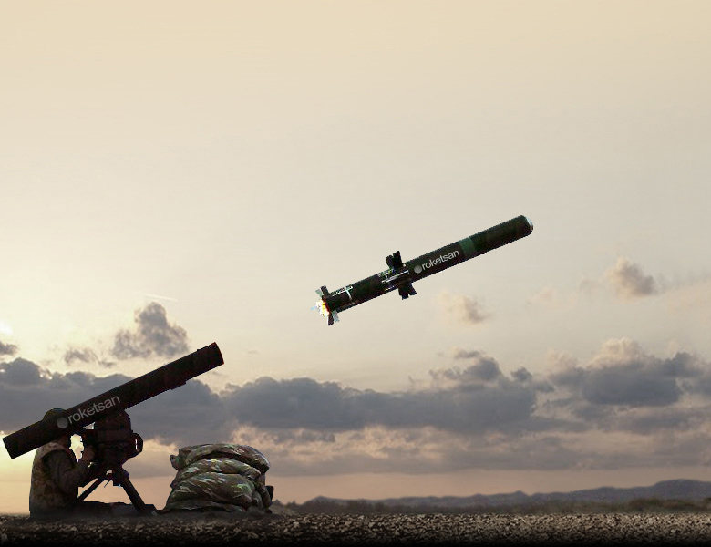
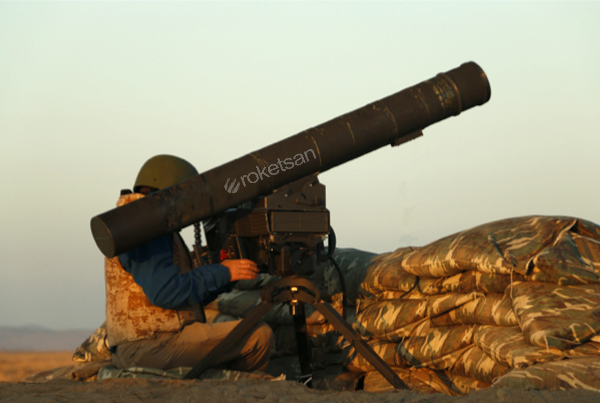
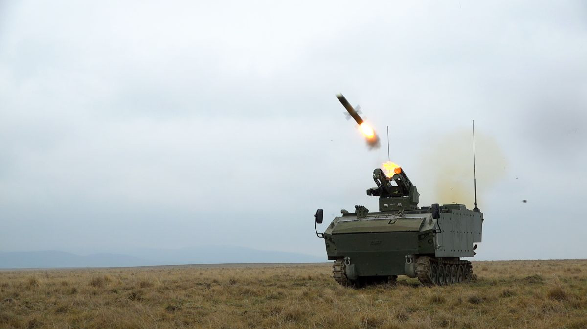

Orta Menzilli Tanksavar Füze Sistemi
OMTAS, orta menzilde zırhlı hedeflere karşı yüksek hassasiyetli angajman sağlamak üzere geliştirilen modern tanksavar füze sistemidir. Sistem, özellikle kara birliklerinin taşınabilir veya araç üstü kullanım ihtiyaçlarına cevap verecek şekilde tasarlanmıştır.
Füze; görüntüleyici kızılötesi arayıcı başlık kullandığı için hedefi görerek takip eder. Bu sayede operatöre atış öncesi kilitlenme, atış sonrası kilitlenme, hedef güncelleme ve at-unut benzeri kullanım esnekliği sağlar.
OMTAS’ın en önemli avantajlarından biri, aynı sistemi hem piyade seviyesi tripod lançerde hem de hafif taktik araçlar, zırhlı araçlar ve amfibi platformlarda kullanılabilir hale getirmesidir. Bu da sistemi sadece bir füze değil, çok amaçlı bir tanksavar çözümü yapar.
Tandem zırh delici harp başlığı, modern reaktif zırhlı ana muharebe tanklarına karşı etkinlik sağlamak üzere geliştirilmiştir. Top attack ve flat trajectory modları da hedef tipine göre farklı saldırı geometrileri sunar.
4 km
1.8 m
160 mm
35 kg
IIR
Tandem Anti-Tank
| Sistem Tipi | Orta menzilli tanksavar füze sistemi |
| Adı | OMTAS |
| Üretici | ROKETSAN |
| Görev Alanı | Zırhlı hedeflere ve tahkimli kara hedeflerine karşı orta menzilli hassas taarruz |
| Menzil | 4 km |
| Uzunluk | 1.8 m |
| Çap | 160 mm |
| Füze Ağırlığı | 35 kg |
| Arayıcı Başlık | Imaging Infrared Seeker (IIR) |
| Güdüm | Hassas güdüm ve kontrol yeteneği, RF data link destekli kullanım |
| Atış Modları | Fire-and-forget, fire-and-update |
| Kilitlenme Mantığı | Atış öncesi veya atış sonrası kilitlenme |
| Harp Başlığı | Tandem anti-tank warhead / tandem zırh delici başlık |
| Motor | Soft launch motor + smokeless rocket motor |
| Standart Arayüz | MIL-STD-1760 |
| Lançer Yapısı | İkili veya dörtlü lançer |
| Taşınabilir Lançer | Portable ground launcher |
| Atış Geometrisi | Top attack ve flat trajectory |
| Öne Çıkan Özellik | Tripod ve araç üstü kullanıma uygun, IIR arayıcıya sahip yerli orta menzilli tanksavar füze ailesi |
| At-Unut | Hedefe kilitlenmiş füzenin atış sonrası kendi angajmanını sürdürmesi |
| At-Güncelle | RF data link üzerinden uçuş sırasında hedefin güncellenebilmesi |
| LOBL / LOAL Benzeri Esneklik | Atış öncesi veya atış sonrası kilitlenme seçenekleri |
| Top Attack | Ana muharebe tanklarının zayıf üst zırhına saldırı |
| Flat Trajectory | Daha düz saldırı profili gerektiren hedeflere karşı kullanım |
| Gece / Gündüz Operasyon | IIR başlık sayesinde 24 saat kullanım |
| Olumsuz Hava Koşulları | Her hava koşulunda görev yapabilme |
| Mobil Muharebe | Piyade ve mekanize birliklere taşınabilir/araç üstü esnek kullanım |
| Ana Muharebe Tankları | Reaktif zırhlı modern tanklar |
| Zırhlı Araçlar | Zırhlı muharebe araçları ve personel taşıyıcılar |
| Tahkimli Hedefler | Bunker, korugan ve benzeri kara hedefleri |
| Sabit Hedefler | Korunaklı veya açık mevzideki sabit hedefler |
| Hareketli Hedefler | Orta menzilde takip edilmesi gereken kara hedefleri |
| Piyade Kullanımı | Tripod / portable ground launcher üzerinden kullanım |
| Hafif Taktik Araçlar | Hafif araç üstü entegrasyon |
| Amfibi Platformlar | Amfibi araç ve platformlara entegrasyon |
| Zırhlı Araçlar | Araç üstü kule veya lançer sistemiyle kullanım |
| Kule Yapıları | İkili/dörtlü lançerle stabilize kule sistemleri |
| Taşıma Kapasitesi | Taktik Füze Silah Sistemi içinde 4 OMTAS taşıma |
| Aile İçindeki Yeri | UMTAS’a göre daha kısa menzilli, kara birlikleri odaklı orta menzil tanksavar çözümü |


